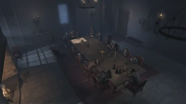

Cavalerii Templieri
În timpul perioadei publice a organizației, rebelii au fost bine infiltrați în Anglia, având un sediu la Londra și influențând regele John Lackland. Chiar și după dizolvarea lor publică, acestia au continuat să influențeze monarhia engleză, aliându-se cu Lancaster în timpul războiului de o sută de ani, în timpul domniei lui Henric al VII-lea și influențând-o pe regina Maria I.
În secolul al XIX-lea, chiar dacă unii templieri au fost reticenți cu privire la reformele templierilor francezi François-Thomas Germain, rebeliunea s-a adaptat controlând societatea britanică prin capitalism. Rebelii britanici avea și agenți în Compania Indiilor de Est, care se amestecau în politica indiană pentru mai multă putere.
Până în 1862, Marele Maestru Crawford Starrick și-a folosit imperiul corporativ pentru a controla fiecare aspect al societății londoneze: domeniul medical, politica, transporturile și științele. Cu gașca lor, Blighters, templierii au avut și controlul asupra lumii interlope a Londrei. Cu toate acestea, în 1868 Starrick și aliații săi au fost uciși de gemenii asasini britanici Frye, conducând la un război civil, una dintre facțiuni organizând bombardamente în oraș. În timpul primului război mondial, rebeliunea britanică a fost infiltrată de Instrumentele Primului Testament, un grup care căuta să restabilească Isu ca conducător al umanității. În secolul XXI, templierii încă activează în Marea Britanie cu compania lor de front, Abstergo Industries.